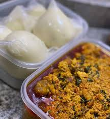

Iyan

Description
This is the king of okele. If anyone tells you otherwise, they're lying to you.
Don't misunderstand, it's not just yam, but pounded. It's an experience. A gateway to a new dimension of flavor. Open your mind and your taste buds and be blessed.
Ingredients
- Yam
- (Yam flour as a decent substitute)
- Flavors, Seasoning, and Spices
- Salt,
- Onions,
- Broth or stock,
- Peppers,
- Protein (Meat and/or fish) to complete the puzzle
Steps
- Cut the yam
- Boil the yam
- Pound until free of lumps (yam chunks)
- Cook on medium heat until it thickens and forms a smooth, dough-like consistency (yam flour)
- Mix your favorite flavors, seasoning, and spices into your soup of choice
- Enjoy!
Home